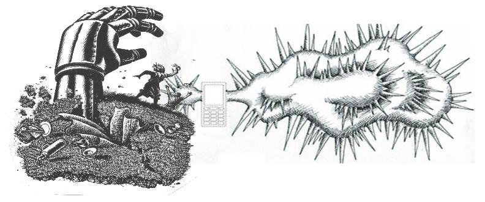
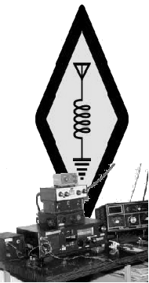
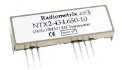
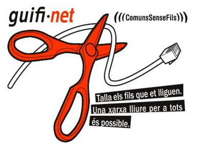
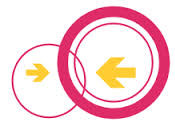
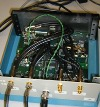
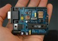
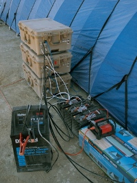
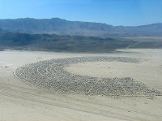
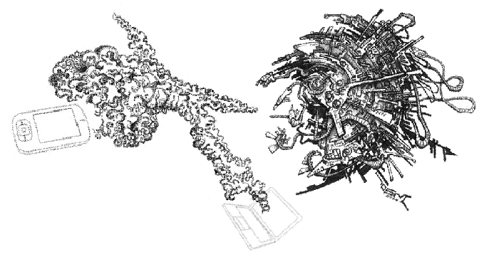

community run communication
If you choose not to rely on electronic communication, thats great. But
for those of us who do, isn't it time we set up community run
alternatives?
Problems with existing communication networks
Gradually, the internet, which once seemed like a relatively free and
user-controlled system – at least compared with totally centralised
TV/radio broadcasting, is becoming a controlled commercial space where
people don't trust each other and we are constantly under the eyes of
authorities and businesses - much like our city centres.
Centralisation of control, censorship, privacy
Two examples: In feburary 2012 the non-profit website 'scroogle' which
offered an alternative version of google (where searches were not
recorded) was taken down after action against it taken by google. Then
in march 2012 google put into practice their new privacy policy, making
users search history available to other google owned sites. Of course
other sites exist which provide secure web searches.
During the uprising in Egypt 2011 there was an internet blackout, making
it clear that such a communication network is valuable for organising
social change but sadly rests in the hands of companies willing to
cooperate with the authorities. Since then the US has began to develop
an 'internet kill switch'. See the US Open congress bill 'Protecting Cyberspace as a National Asset' and indymedia
article Internet Freedom Fighters Build a Shadow Web

ideas for community run communication, new and old
In order for a community run network to become popular, it might be
useful to have some universal standards, and a way for different
networks to link together. A small group might use high frequencies to
get high bandwidth communication locally, but how can we connect that
communication with lower frequency, longer range links to other
communities? If we are going to set up some sort of repeaters or base
stations to link groups, they need to be useful to everyone, and not
dependent on other parts of the network. Some repeaters might be
installed in vehicles or boats that move around. Or they might be
dependent or wind or sun for power – so they cannot be always relied
upon.
It is relevant here to question what is important to us in a
communication network. Simply spending time with and talking to people
around you is a very useful way to communicate. Any kind of
centralisation or broadcasting of information could be argued to be
detrimental to the autonomy of individuals and communities. when we look
at examples in 'nature' we can see that beautiful organised structures
come about as the result of a large number of low level interactions.
food and fire
make food and fire, people come together and communicate. actually it seems that the more communications technology we have, the less we do this. a lot of people feel really isolated, even though they have worldwide communication devices.
Language
Language is an important communication tool. Like other aspects of our
culture, it is becoming more homogenised and less diverse. There are
many examples of when a common language has been used as a way for a
minority to have power over many, and of when speakers of other
languages or dialects are oppressed. Language homogeny is a structure
used to create a national identity and recognition of and obedience to a
national state. Many revolts and uprisings have been possible because of
a refusal to use the majority language. In recent times, the
globalisation of the market and of communications infrastructure (for
example the internet) mean even more homogeny of language, allowing even
more centralisation of control by a minorty. Of course, using a common
language improves relations between communities, but when this is forced
or imposed my a minority there will always be some kind of communication
breakdown, a loss of some culture, ideas or knowledge, and somebody will
be more isolated. Thats not to say we should not learn popular languages
and use them to network with far away friends, but that we must
recognise that divirsity of language is important in maintaining
decentralised social control.
- Book: 'When languages die - the extinction of the world's languages and the erosion of human knowledge' K. David Harrison 2007 Oxford University press
Stories, tales and songs are a way to memorise ideas so they can be passed between groups
and between generations.
Post
Write a letter, and give it to someone who is travelling the direction you want it to go. Like all communication systems, the provision of a postal service has often been a way to exert control.
A simple way to communicate in a group is to leave a written or
pictorial message for others to see. A way of making it weatherproof is
usually needed.
Printing
Some would argue that the invention of the printing press, meaning that
information could be mass produced, was a hindrence to our diversity of
ideas. There are no doubt problems brought about by any kind of
mechanism which allows a minority to speak to the masses. But of course
they can also be very important and empowering community tools.
radio
The radio spectrum, like other kinds of space, has been divided into
discrete parts of which the majority is resverved for authorities, military, or companies who will
sell it back to us to use. To use it in a genuinely decentralised way we
might need to disrespect the idea of bandwidth ownership.
amateur radio
 'amateur' radio communication has
existed for over a hundred years. It is both a local and an
international network and has often been relied upon when other
communications have broken down because of disasters such as floods.
Data modulation systems such as
PSK31 can allow text services
similar to email or sms, which can operate over thousands of miles on
HF. Using the amateur bands requires a lisence and an official
'callsign', which are relatively cheap and easy to get, but there are
some undesirable restrictions. For example, sending encrypted messages
is forbidden, and the lisencing association stores personal details of
its users and will cooperate with governments. Of course we could use
similar systems illegally, but as an existing nework it has the
advantage of having estabilished and well documented international
standards, as well as infrastructure such as repeater stations. The
amateur community emphasises learning and experimentation rather than a
practical everyday communication tool.
- AMPRNet Amateur packet radio
network, also known as hamnet, is the name given to computer
networks connected by amateur radio links. TCP/IP
(internet protocol) packet radio networks have existed since before
the public internet but have never been very popular, partly because
of bandwidth restrictions (VHF links are commonly limited to
9600 baud). Interestingly, radio amateurs are allocated a considerable chunk of
the IPv4 address space (44.0.0.0/8).
- Hinternet on
noisebridge
- High Speed Multimedia Radio
this article looks at using 802.11 wifi on different amateur bands.
- Low cost E-mail over HF with OFDM and turbo coding. This
project looks to be a robust long distance solution. It uses newqpsk
(or Q15X25) protocol with the
'soundmodem' software. OFDM seems to be gaining popularity in these
lower parts of the spectrum, but I have a bit of trouble
understanding this example, how can a standard HF transciever be
used with a new and different modulation mode?
- QRZ.com callsign database, also forums
including buying and selling amateur hardware.
- chirp open source, cross platform,
radio programming tool (software)
- The (chinese) radio documentation project produce a
creative-commons-licensed manual for the Baofeng uv-5r, a low cost
vhf/uhf handheld amateur radio (2m and 70cm). The original manual does not explain everything.
- CQInet open source software VoIP
internet links for amateur radio. Alternative to IRLP, ILink or
echolink.
Using simple, low cost transcievers for data
 A simple solution can
be to use low cost UHF transmitters/recievers with RTTY. There are some
very cheap transmitters sold on ebay, some sold for use with arduino or
raspberry pi (see issue 8 of magpi magazine). The problem is that the cheaper
ones do not support channel selection, so would interfere with each
other.
companies selling radio and electronics stuff
pirate radio broadcast
Pirate radio can be empowering for a community and is a useful tool for
combining art and information. The advantage is that the recievers are
cheap and can be found everywhere. Compared to wifi networks it is much
more practical for recieving in more wild places, fields, gardens,
workshops, meaning we can be doing practical things and not stuck
indoors, while recieving information. Of course there are legal problems with
broadcasting without a lisence, especially if it is done in the city.
But using it in isolated rural areas is something that can definately be
experimented with. As anyone with an FM radio can listen, it can be a
good way to make links with other people who live nearby.
However, we must not forget that the nature of broadcast is that it remains a
one-to-many 'shut up and listen' monologue, traditionally used as an oppressive political tood, and care must be taken that
it remains a project that everyone can participate in.
FM systems will usually use a 1 or 2w 'exciter' to produce the modulated
signal and then an RF amplifier. Many modern systems, especially the
cheaper/lower power ones have the exciter and amplifier all in one box
or even all on one board. 'HLLY' and similar Chinese brands are like
this and are very cheap and simple to use. However they are not very
high quality and not suitable for high power transmissions (more than
say 60w). Also the more power you are using, the better antenna you need to not damage the transmitter. Most transmitters have a built in SWR (standing wave ratio) meter to give an indication of how well the antenna is functioning and will normally switch off automatically if a dangerously high amount of power is coming back from the antenna. Some transmitters will need an external SWR meter.
Most low power FM transmitters run on 12v DC so are perfect for running
from batteries. If you want to run from the mains electricity and dont
have a transformer, computer power supplies work quite well. If they are
modern ATX ones, you will need to connect the green wire on the
motherboard connector to a black wire to switch it on. Then on each
block of 4 wires you have yellow and black wires to give 12vDC and red
and black to give 5vDC.
studio to transmitter audio bridges
Many pirate radio stations use a 'bridge' to link the studio to a remote
transmitter. This is done either for security reasons (not wanting to
get caught at the site of the transmitter) or simply to keep the
transmitter close to the antenna when the antenna is in a difficult to
reach spot (remember, the hieght of the antenna greatly effects the
range). A bridge which gives a lot of range allows you to be very
creative with antenna locations, as the transmitter could be powered by
a small solar panel and battery and put in a very difficult to reach
place. This 'bridge' can be made in various different ways:
- Using a very long audio cable
- Using a second, usually lower power, FM broadcast transmitter
operating on a different frequency.
- Using transmitters from wireless microphones. Most have at least
200khz of bandwidth and work in 470-698mhz UHF TV spectrum (could
also be interesting to use for data...)
- Using a "microwave audio bridge" which you can buy, often they
work on 2.4 GHz wifi.
- use wifi routers and audio streaming software to make the bridge
(a diy version of the above).
- use an internet link. A computer (eg: raspberry pi) and internet
dongle or whatever (instructions in forum on
Radionecks)
- use a PMR (walkie talkie) link. Probably would be bad audio
quality because of low bandwidth but maybe one could find a way to
have a high bandwidth bridge on PMR frequencies using multiple channels. (maybe some
wireless microphones do this?)
- use CB, apparrently this has worked well for some projects.
Again of course the bandwidth means a loss in quality but the
advantage is the transmitter can be *very* far away. A possibility
would be to use modified CB equipment to spread the signal over
several channels.
- or use some other radio frequency, with Software Defined Radio or amateur stuff, we
can experiment...
Pirate radio links and projects
wavelength calculation
For making antennas its important to know the wavelength.
wavelength(lamda) = c / frequency
c = speed of light = 299,792,458 m/s or just use c = 3 * 10 ^ 8
so if we use working with frequency in MHz we can use c = 300m/s
so wavelength = 300 / frequency in MHz
so 100mhz = 3m wavelength
Shortwave pirate radio
Many pirate radio stations operate on FM. But there are also AM stations
covering larger areas, and there is an international shortwave pirate
radio scene.
Alternative internet projects
- ipfs - the interplanetary filesystem. A promising, decentralised, p2p protocol, designed to be an alternative to HTTP (and potetially many other internet protocols). It is a content addressable filesystem, meaning files are referred to by their content (using a hash) rather than their location. The nearest available copy of the file is retrieved, increasing speed and efficiency and removing the power dynamic of a centralised server-client relationship. ipfs is working right now, a permanant filesystem, completely controlled by its users and resiliant to censorship. it is gaining popularity quickly, and has the potential to completely upturn the topology of the web.
- zeronet
-
GNUnet GNUnet is a framework for secure peer-to-peer networking that does not use any centralised or otherwise trusted services. GNUnet wikipedia
-
i2p I2P wikipedia alternative network project similar to TOR.
-
freenet Freenet wikipedia
-
Tor free software for online anonymity. There are certain services and websites configured to be only accessible to Tor users, which comprises a kind of darknet, including email, the hidden wiki, The silk road marketplace (now allegedly shut down).
- maidsafe SAFE network - another alternative newtwork
wifi mesh or point to point
Using wifi for outdoor links is gaining more and more popularity. As the
2.4ghz band becomes crowded in densly populated area, more projects are
begining to use the 5Ghz and 10Ghz bands as well.
- wireless networking for the developing world
ebook
- freenetworks.org an association of
community network groups around the world.
- Battlemesh an annual european event to
compare different routing protocols for mesh networks
- OpenWrt Open source firmware for routers and
other embedded devices
- WRTnode First & only open source hardware for
OpenWrt, the world's smallest Linux+Wi-Fi development board.
- free antennas.com
- Freedombox example
projects
- 430mhz data transfer on this wiki
- Projectmeshnet.org "Project
Meshnet was created out of the /r/darknetplan community in order to
fight back against Internet censorship by corporations and
governments around the world. It aims to use a combination of
software and hardware to achieve the goal of a censorship-free
Internet" This wiki is a guide to setting up a meshnet node,
using CJDNS.
-
althea mesh project where you pay peers to share connection
-
Darknetplan subreddit "A
place to organize efforts to create a hardware/software stack for a
globally scalable system of interconnected local meshnets. We realize
that the inclusion of "darknet" in this name does not properly describe
our current objectives, but the meshnet is a necessary foundation for
the final goal of a truly resilient darknet."
-
cjdns software cjdns
wikipedia
-
hyperboria decentralised network powered
by CJDNS
-
maidsafe 'platform for decentralised
internet' - distributed cloud storage.
- Storj software for distributed cloud storage.
- netsukuku a very
interesting project. Has not been maintained for a while but is
recently being re-started.
- FON - commercially provided cooperative wifi
sharing (but you need an internet connection to join)
- tlant2409b photos of inside a commercial
2.4Ghz directional antenna (by TP-Link) to give ideas on DIY design.
mesh routing protocols
- olsr Optimised link state routing
- B.A.T.M.A.N Better Approach to Mobile
Ad-hoc Networking
- bmx6
- Babel a
loop-avoiding distance-vector routing protocol
guifi.net
 guifi.net is
based mainly around catalunya/valencia, and with over 20,000 operational
nodes, it claims to be the biggest wireless network community in the
world.
Each local guifi.net group organises between themselves financially -
antennas can be bought be individual users, but often it is useful to
put together some money for more expensive longer distance 'supernodes'
and for times when nodes would need to be replaced, for example after
being struck by lightening.
Many local guifi.net groups have successfully persuaded local government
to share their internet connections, for example from libraries or
offices, by allowing the group to install an antenna at the site linking
it to the guifi network.
Guifi.net is backed by a 'foundation' officially registered as an
operator with the Spanish Telecommunications Market Commision. Anyone
(as long as they abide by guifi.net's code of practice) can use the
name, and take advantage of being recogised as a foundation. For
example, the inhabitants of two towns might organise together to lay
fibre between the towns, and use guifi.net's foundation status to get
permission from local governement.
They also have a good advocat and rely on european law to settle
disputes about the legality of the project.
They use a private address space 10.xxx, ips are allocated by their
website. and there are dns servers to resolve these local ips. The
network is primarily used for providing interenet access, but
off-internet services (ftp, etc) also exist and are quite popular.
Many guifi.net groups use mikrotik routers, and some use ubiquity.
freifunk
 Freifunk is an international
Project for free wireless networks and frequencies (Open Spectrum).
Originating in germany, there are many community wireless mesh networks
operating under the name 'freifunk'. The freifunk firmware is a modified
version of OpenWRT designed for mesh networks. In Germany, there are
legal problems with offering unlocked wifi internet access because of
the oppressive regulations about filesharing and their implications for
the interenet account holder
(Störerhaftung). Many
freifunk projects now use Virtual Private Networks to re-route network
traffic to get are this problem. This highlights a problems with the
regulation of the internet by governments, and another way to get around
it could be to begin to use off-intenet projects and services.
funkfeuer
funkfeuer.at is a free mesh network project
based in austria, using OLSR routing protocol. It is a radio network,
also using internet VPN tunnels to link 'radio islands' (nodes not
accessible by radio).
tetaneutral
- tetaneutral.net Toulouse based wireless
ISP, and member of Federation French Data
Network, a federation of
associative (non-commercial) ISPs in france. They use mostly
ubiquity routers to make point-to-point links in and
around toulouse.
Wifi Hardware manufacturers
Some commercial manufacturers of wifi equipment are
- Mikrotik based in Latvia. Their routers
run the companies own firmware, and cannot run OpenWRT which is a
big disadvantage.
- OSBridge based in poland.
- Ubiquiti Networks big company based in
United States.
- Soekris based in united states. Make
extendible hardware, that you can add stuff to.
Many wifi projects use cheaper brands of routers, designed for use in
the home, such as Linksys,
TP-Link and
Buffalo.
light modulation
Optical links can give very high bandwidth but must be exactly pointed
at each other.
- RONJA Reasonable Optical Near
Joint Access. Ronja is an open source hardware project, using
modulated visible (or infrared) light, with 153 registered
installations worldwide. It is developed in Czech republic where it
is deployed by ISPs as well as serveral community wireless networks,
for example CZFree.net.
- KORUZA– Open source hardware
1Gbps optial data link over up to 100m developed by wlan slovenija.
- modulatedlight.org
Whitespaces and Wireless Regional area networks
A standard for WRAN (wireless regional area networks), IEEE 802.22 has
recently been developed, which will use 'white spaces' in the VHF and
UHF bands, previously used by analogue TV broadcasting. The standard is
likely to be used by commercial internet service providers to cover
rural areas - internet base stations could operate over a 60km radius,
like TV transmitters. It is the first international standard to use
'cognitive radio' to eliminate interference with existing TV signals.
This makes it possible that transmission equipment will be software
defined, making it more adaptable for eventually being re-used by us.
software defined radio
Software Defined Radio devices could be very useful in establishing a community run network. They are computer
controlled radios, where various aspects of the radio's operation which
traditionally were done by analogue hardware devices, in paticular the
modulation and demodulation of the RF signal, are done digitally by
software. This has only recently become posibile because with radio
frequency high sampling rates are required and computers need to run
fast enough to demodulate them in real time. The advantage is that software defined
radio devices are flexible, adaptable and easy to modify. By changing the software, a single device could act as an FM transmitter, GPS reciever, digital TV decoder, VHF tranciever,
whatever... Of course some hardware changes (such as amplifiers or antennas) are required, but essentially it is
software which defines the behaviour as a radio device.
This means that new radio protocols could be established without the need for new hardware. But that is only the beginning. It allows more dynamic, more flexible use of the radio spectrum. When there is little radio traffic (in unpopular places or at unpopular times) we can use more bandwith, reacting dynamically to interference. When connectivity is good we can increase frequency and decrease power consumption. When powered by solar or wind, we can dynamically adjust frequency or RF power depending on the power available.

Reducing resources and waste by less hardware redundancy

Making devices more flexible by increasing the extent to which they are
controlled by software is good because when the device is no longer
needed it can be used for something else instead of being thrown away.
Multi-perpose programmable devices, such as the arduino or raspberry pi,
are good examples of hardware which will never become redundant.
Software defined radio is likely to gain popularity in the coming years,
which is interesting for us because it is easy to modify for different
perposes. So when this technology becomes widespread and easy to find
for free, we could modify commercial devices to work with our own set of
standards – and if we change those standards at some point we will not
need to get new equipment.
SDR use for mobile phone base stations
The USRP has been used in projects to decode GSM mobile phone signals.
It is also used in a project to create easy to build GSM base stations
using OpenBTS. A free mobile network using the USRP running OpenBTS
(with some RF amplifiers) and powered by wind has been set up at Burning
man festival for several years (But with an official lisence). Of course
if an unlisenced GSM network was to get popular, we would be likely to
have problems with the authorities very quickly. But the advantage is
that individual users need only a mobile phone – and thousands of them
are being thrown away.
 

RTL-SDR recievers
More recently, low cost SDR receivers have become popular, as it was
realised that SDR digital TV recievers (such as the NooElec TV28T)can be
used in a very flexible way - recieving 25MHz to 1.7GHz, usually with a
1mhz bandwidth, meaning they can be also be used as a spectrum analyser
to look at 1mhz at a time. An antenna design known as a
discone is good for
omnidirectional wideband applications making it good for SDR projects.
There seems to be a number of reasons why Software defined radio could
be useful for community run communication systems. It could allow us to
create something genuinely independent of existing commerically provided
systems, whilst being able to re-use redundant hardware from these
systems. Changes can be made to the standards of how the system works
without requiring any new hardware – saving resources. Frequencies can
be dynamically allocated, allowing different types of hardware to work
together and interference with other systems to be avoided
automatically. Software projects are also easier to work on
collaboratively than hardware, meaning they will be constantly optimised
and adapted.
Modulation modes for digital radio
Orthogonal frequency-division multiplexing is the modulation system used
by ADSL, Wifi, and DAB digital radio. Multiple carriers are used, and
the idea is that sub carrier frequencies are chosen that are
'orthogonal' to each other, which means they do not interfere with each
other. Interestingly it is used even on HF (below 30Mhz) as used by the
new international broadcast system 'digital radio mondiale'. It allows
for a better signal in less bandwith compared to standard AM modulation.
sounds like chaos
Decentralised community run systems will, by their nature, encourage
people locally to interact, as information spreads geographically. If
you are searching for something or announcing that you have something to
offer, it will be naturally easier to find responses nearby. Compared to
the internet, it will be more chaotic, but in a beautiful
self-organising way. Text/images/music/whatever will spread
geographically and and be able to discover the same stuff as others
nearby but it will change all the time as ideas/art spread between
groups like a roumour, like fairytails.
But aren't you gonna spend forever setting all this stuff up while your
plants need weeding and watering and you ignore the people around
you..... 
continue to 430mhz data transfer